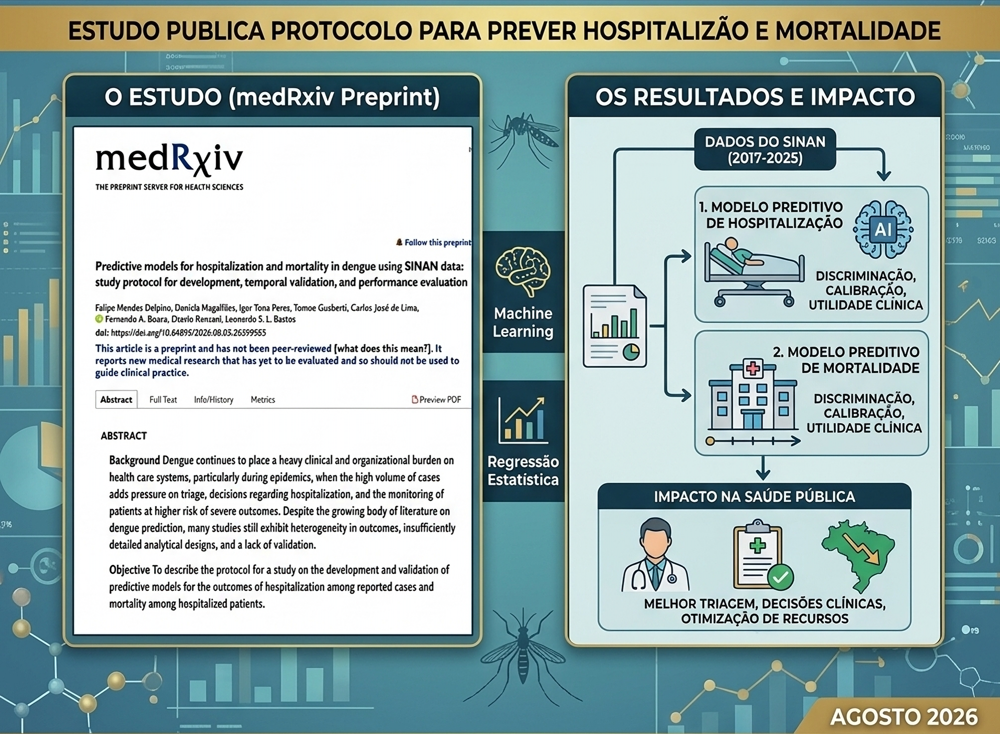

Agosto de 2026

Foi publicado no repositório medRxiv o preprint do estudo “Predictive models for hospitalization and mortality in dengue using SINAN data: study protocol for development, temporal validation, and performance evaluation”, que apresenta um protocolo detalhado para o desenvolvimento e validação de modelos de risco voltados à triagem clínica e à vigilância epidemiológica da dengue no Brasil. O trabalho, conduzido por pesquisadores brasileiros, propõe uma abordagem transparente e reprodutível para enfrentar desafios persistentes na previsão de desfechos graves da doença.
O artigo destaca a necessidade de modelos preditivos mais robustos para apoiar decisões clínicas em cenários de alta demanda, especialmente durante epidemias. A dengue impõe grande pressão sobre sistemas de saúde, e a falta de ferramentas confiáveis para prever hospitalização e mortalidade dificulta o manejo adequado de pacientes.
O protocolo apresentado contribui para:
O estudo é retrospectivo e utiliza dados do Sistema de Informação de Agravos de Notificação (SINAN), abrangendo o período de 2017 a 2025. Serão desenvolvidos dois modelos independentes:
A análise inclui comparação entre regressão estatística e algoritmos de machine learning, além de avaliação de desempenho por discriminação, calibração e utilidade clínica.
Ao estabelecer um protocolo claro e replicável, o estudo abre caminho para a criação de ferramentas que podem apoiar profissionais de saúde na identificação precoce de pacientes com maior risco de agravamento. Em um país que enfrenta ciclos recorrentes de epidemias de dengue, modelos preditivos bem validados têm potencial para melhorar fluxos de triagem, orientar decisões de internação e otimizar recursos hospitalares.
DOI: 10.64898/2026.08.03.26359583
← Voltar para todas as notícias